Campina Grande
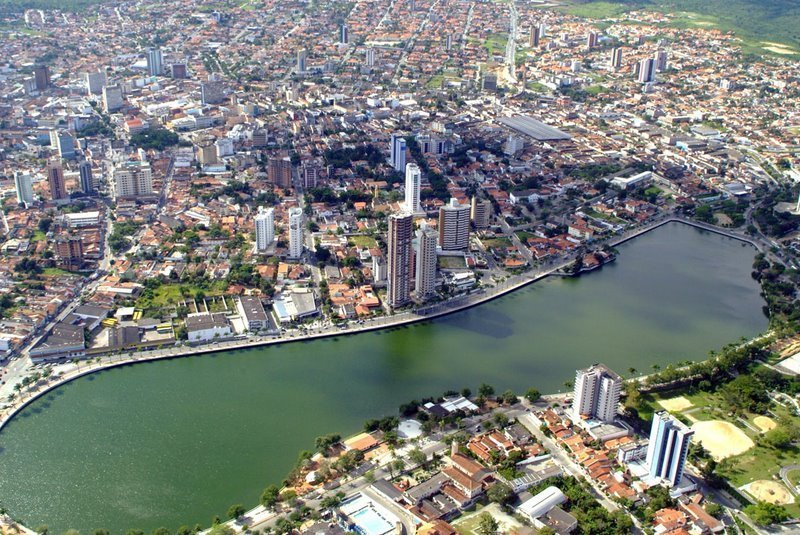Campina Grande, situada no interior da Paraíba, é um destino turístico de destaque no Nordeste brasileiro, especialmente conhecida por sua grande importância cultural e histórica. A cidade é famosa por sediar o Maior São João do Mundo, uma das maiores festas juninas do Brasil, atraindo milhares de turistas todos os anos. Além disso, Campina Grande tem um papel importante no desenvolvimento econômico da região, com destaque para a agricultura, o setor industrial e a inovação tecnológica.A cidade oferece uma combinação de atrações turísticas que incluem um ambiente rural e urbano, com belas paisagens, espaços culturais e monumentos históricos, além de uma gastronomia que reflete a riqueza da culinária nordestina.
A cidade oferece uma combinação de atrações turísticas que incluem um ambiente rural e urbano, com belas paisagens, espaços culturais e monumentos históricos, além de uma gastronomia que reflete a riqueza da culinária nordestina.
Principais pontos turísticos
- Parque do Povo 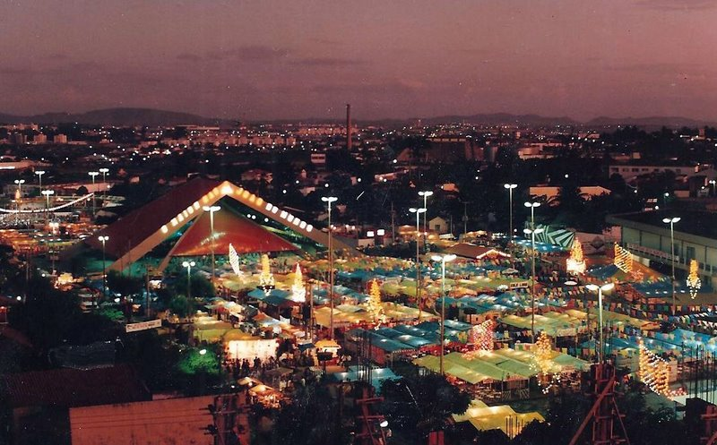
- Museu Vivo de Ciência e Tecnologia 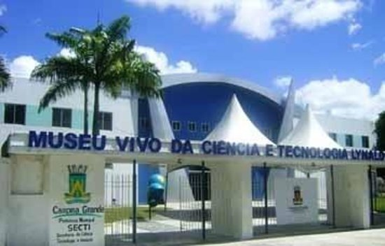
- Estádio Amigão 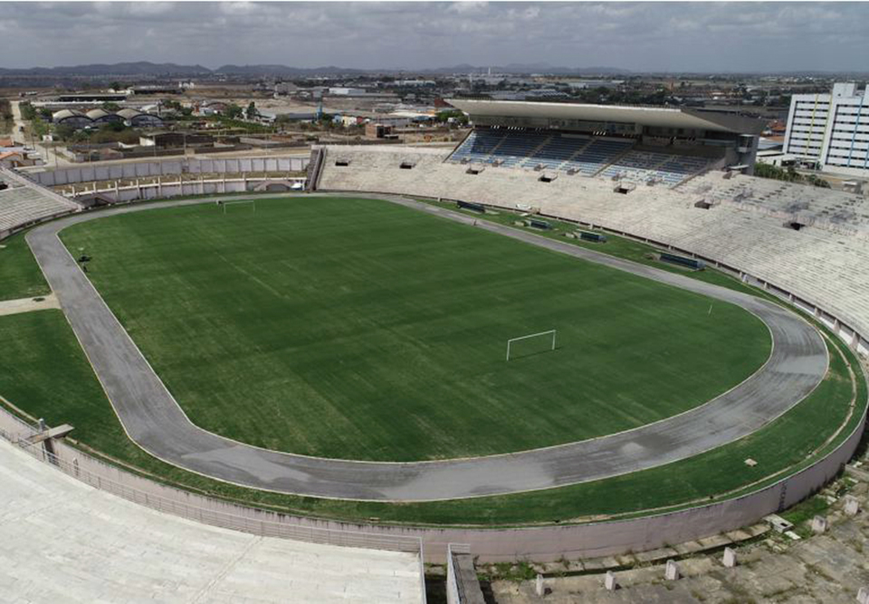
- Museu de Arte Assis Chateaubriand (MAAC) 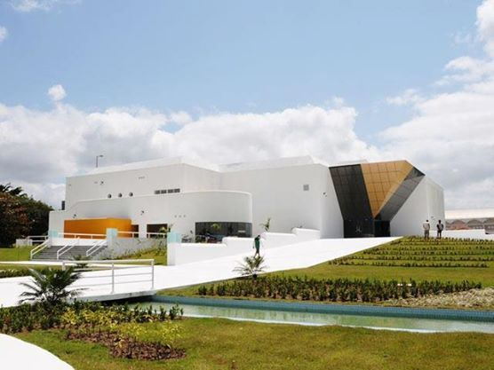
- Complexo Cultural e Turístico da Rainha da Borborema 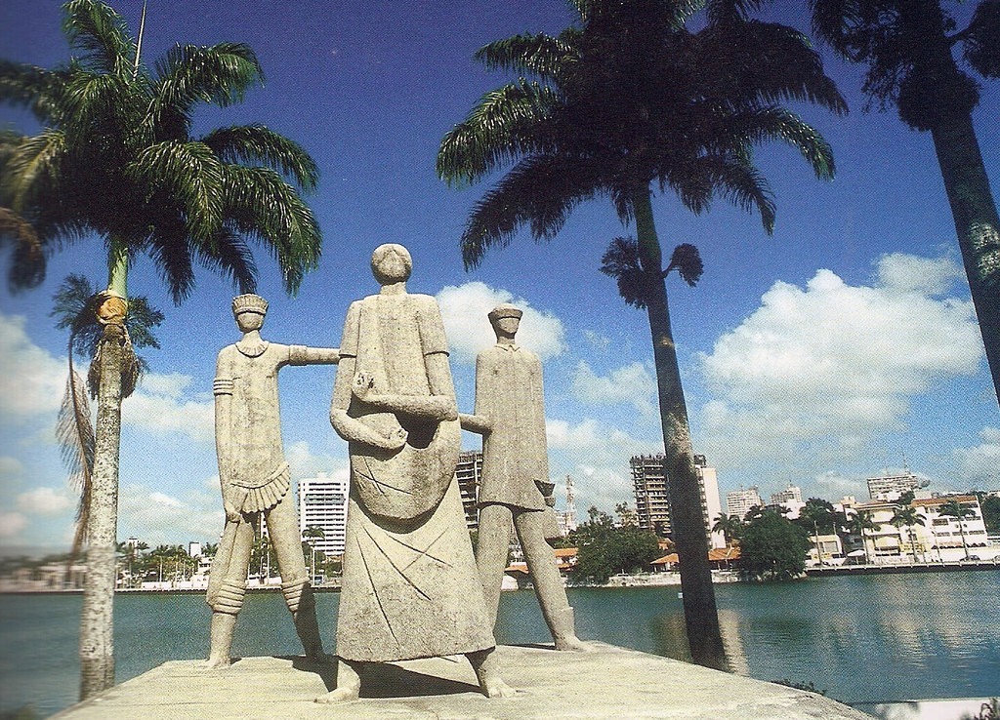
O Parque do Povo é o principal palco do Maior São João do Mundo, onde ocorrem as festividades juninas, com apresentações de forró, danças tradicionais e shows de artistas renomados. Fora da época de festas, o parque é um espaço de lazer e convivência, com jardins, quiosques e áreas para piqueniques.
O Museu Vivo de Ciência e Tecnologia de Campina Grande é um espaço interativo e educativo dedicado à divulgação da ciência e da tecnologia de forma acessível e divertida. Localizado na cidade, o museu oferece uma série de exposições e atividades que visam estimular o interesse de crianças, jovens e adultos pelas áreas científicas e tecnológicas. O espaço é repleto de experimentos interativos, demonstrações práticas e exposições que abordam temas como física, astronomia, biologia, química e tecnologia.Além de ser um ponto turístico, o museu também desempenha um papel importante na educação, realizando eventos e workshops que contribuem para o aprendizado e o desenvolvimento de habilidades científicas e criativas.
O Museu Vivo de Ciência e Tecnologia é uma excelente opção de passeio para famílias e estudantes, proporcionando uma experiência divertida e educativa em Campina Grande.
O Estádio Amigão é o principal estádio de futebol de Campina Grande, sendo um importante ponto para os amantes do esporte. O estádio também sedia diversos eventos culturais e shows, além de ser um símbolo da paixão local pelo futebol.
O MAAC é um dos principais museus de arte da cidade, abrigando um acervo diversificado que inclui arte moderna, contemporânea e regional. O museu também realiza exposições temporárias e atividades culturais, sendo um local importante para a cena artística de Campina Grande.
Esse complexo inclui espaços como o Teatro Facisa, a Biblioteca da Universidade Estadual da Paraíba (UEPB) e outras instalações culturais que promovem eventos e atividades relacionadas à arte e à cultura local. A Rainha da Borborema é um apelido carinhoso dado à cidade, refletindo a importância cultural da região.
Principais pontos gastronômicos
- Restaurante Retrato 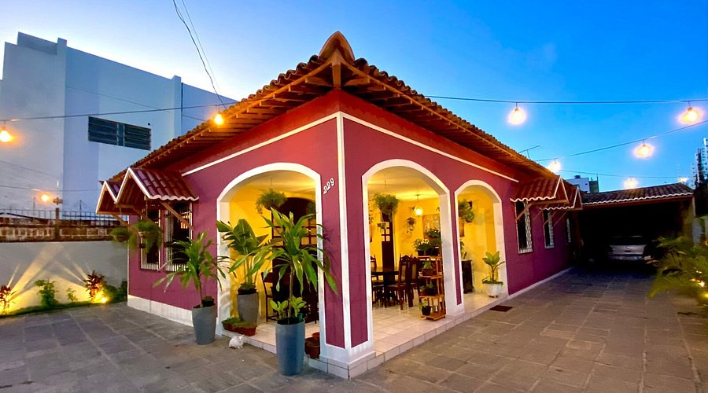
- Localização: Centro da cidade.
- The W Restaurante 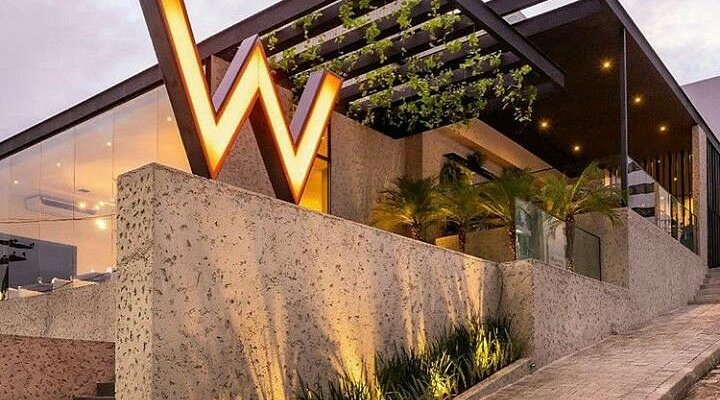
- Localização: Centro da cidade.
- Lacucina 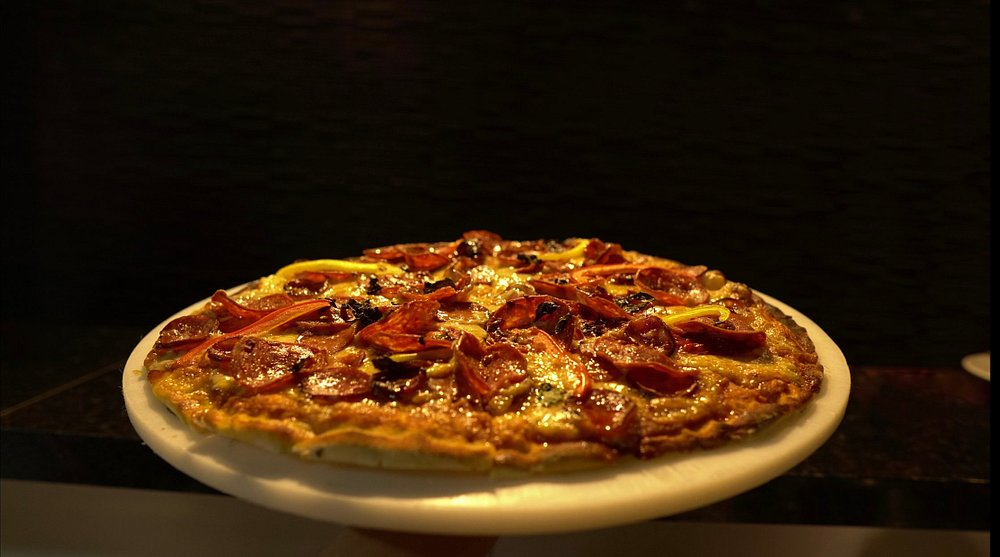
- Localização: Centro da cidade.
O Retrato é um ambiente exclusivo e intimista localizado próximo ao principal cartão postal da cidade, o Açude Velho. Visitar o Retrato é fazer uma viagem no tempo de volta ao anos 80/90. A decoração é repleta de antiguidades em perfeito estado de conservação, como vitrolas e máquinas de datilografia, todas de acervo pessoal do Chef. Mais que um simples jantar, a casa busca proporcionar uma experiência sensorial onde o cliente é guiado a submergir num universo de aromas e sabores ao som de uma boa música. Os menus são de cozinha autoral, sempre surpreendentes e únicos.
Em datas previamente divulgadas nas redes sociais também são servidos menus inspirados em cozinhas do mundo. Para participar dos jantares é necessário reserva prévia.
O The W Restaurante nasceu do prazer comum dos proprietários por gastronomia de qualidade, grandes vinhos, drinks modernos e a necessidade de um atendimento de alta performance. Sua cozinha é artesanal, favorecendo a pureza dos preparos diários. Diferente do conceito de "linha de produção" em alta gastronomia, oferecemos o Comfort Food (a comida que conforta).
De ambiente amplo e moderno, o The W Restaurante oferece conforto e um cardápio de muito sabor. O menu também atende aos vegetarianos.
Enquanto os turistas apreciam a vista do Parque do Povo, eles também reservam uma mesa aqui para saborear suas deliciosas refeições. Neste restaurante, você será oferecido cozinha italiana. Você vai adorar a comida deles, especialmente sua pizza generosa, molho à bolonhesa perfeitamente elaborado e bife tártaro exclusivo. Os hóspedes do Restaurante Lacucina podem desfrutar de um atraente bolo de frutas, um surpreendente petit gâteau e um saboroso maxilar. Seu irresistível fino está entre as melhores bebidas que você pode saborear.
Muitos visitantes dizem que a equipe é eficiente. Descansar e comer aqui é sempre um prazer, principalmente por causa de seu serviço admirável. Os frequentadores deste restaurante dizem que seus preços parecem razoáveis. Uma decoração interessante e uma atmosfera delicada ajudam seus clientes a se sentirem relaxados.
Principais pontos culturais
- Maior São João do Mundo 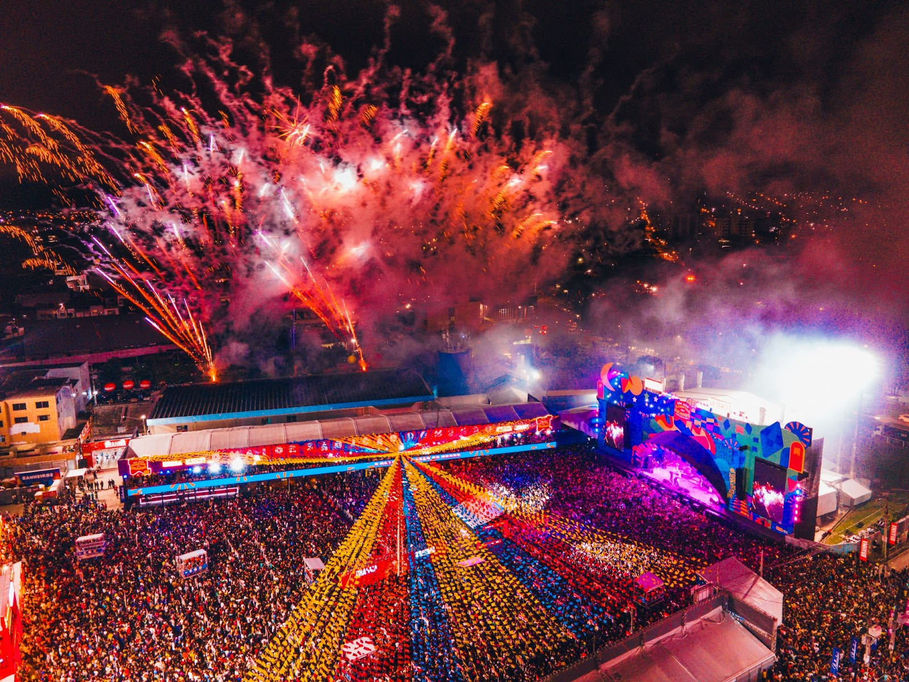
- Localização: Parque do Povo e arredores.
- Teatro Municipal Severino Cabral 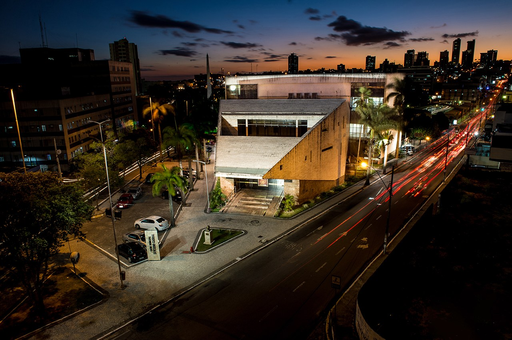
- Localização: Centro da cidade.
- Museu de Artes Popular da Paraíba 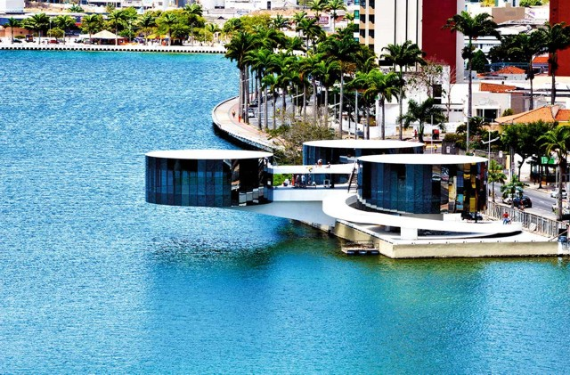
- Localização: Centro da cidade.
O Maior São João do Mundo é, sem dúvida, o evento cultural mais significativo de Campina Grande. Durante o mês de junho, a cidade se transforma em um grande palco de festas populares, com quadrilhas juninas, apresentações de forró e shows de artistas regionais e nacionais. Milhares de turistas vêm à cidade para vivenciar a tradição e alegria dessa festa popular.
No Parque do Povo, onde se concentram barracas que vendem comidas e bebidas típicas, os trios embalam os turistas com o verdadeiro forró pé de serra durante toda a noite, sem pausa.
O Teatro Severino Cabral é um dos mais importantes centros culturais da cidade, com uma programação que inclui peças de teatro, musicais, danças e shows de diversos gêneros. O teatro é um local essencial para a vida cultural de Campina Grande, sempre recebendo artistas locais e nacionais.
O Espaço Cultural de Campina Grande é um centro que abriga diversos eventos culturais, como festivais de música, teatro e artes visuais. O local também abriga o Centro de Convenções da cidade, sendo um ponto de encontro para artistas e público de todas as idades. O Museu de Artes Popular da Paraíba também está localizado neste complexo.
O Museu de Artes Popular da Paraíba (MAPP) é um importante centro cultural dedicado à preservação e promoção da arte popular e do artesanato da Paraíba. O museu reúne um vasto acervo de obras que refletem a rica tradição artesanal e cultural do estado, com destaque para peças de madeira, cerâmica, renda, têxteis e outros materiais típicos da região. Além das exposições permanentes, o museu também realiza eventos culturais, como oficinas e atividades educativas, que incentivam a valorização das técnicas artesanais e o contato com as manifestações culturais locais. O MAPP é um espaço essencial para quem deseja conhecer mais sobre a diversidade e a criatividade da arte popular paraibana, sendo uma excelente opção de visita para turistas e moradores de Campina Grande.